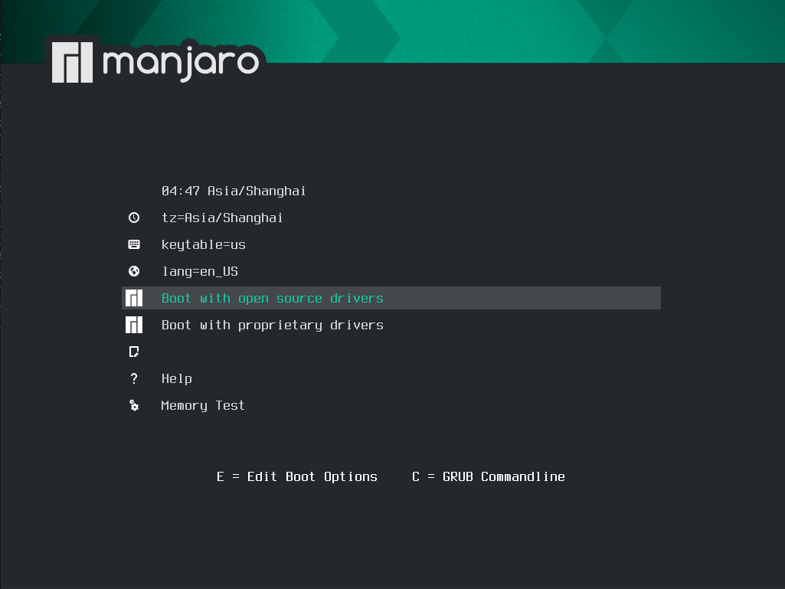
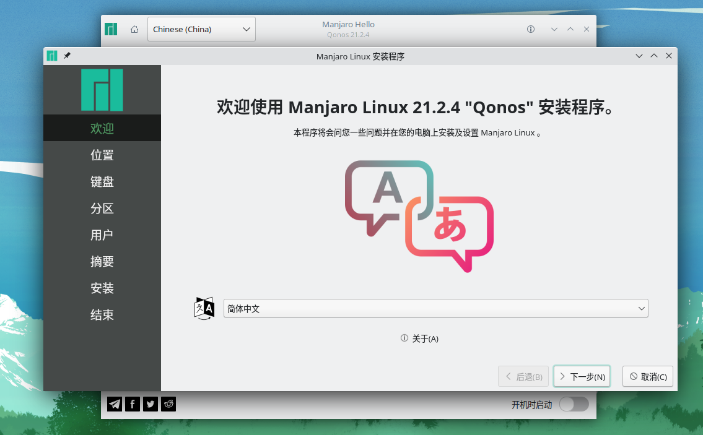
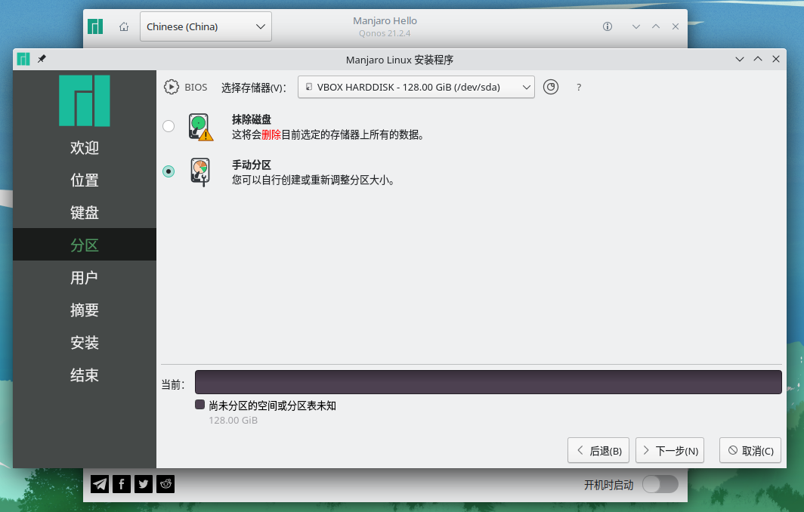
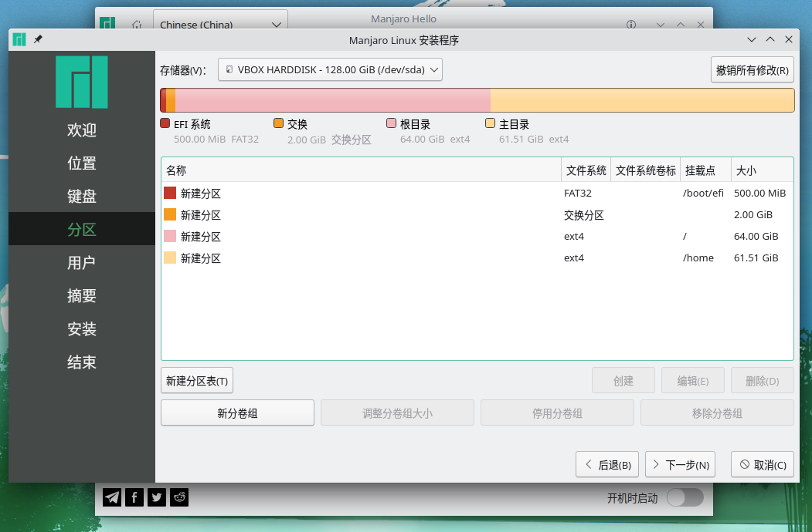
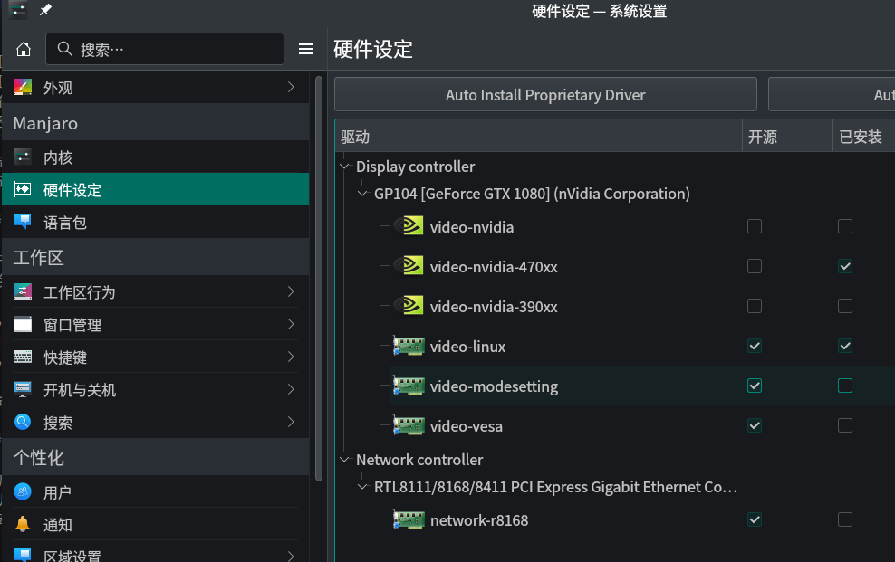

从2019年到2022年，manjaro发行版渡过了我的整个博士生涯。最近毕业重新装了系统，依然选择了最新的manjaro KDE Plasma 21.2.4（本来装了arch，大小问题不断被劝退了😜）。基本上这台linux主机要跟着我进入人生下一阶段，作为主力台式机也不打算再折腾了。安装过程中有一些新的学习体会（坑），在这里更新记录一下，希望能帮到有需要的朋友～
三年manjaro使用感悟
总体而言，作为一个linux系统小白，我对manjaro还是相当满意的，基本上，manjaro能满足我日常工作、娱乐的需要。manjaro系统安装显卡驱动和切换内核确实简单，只需在系统设置里改变即可，此外，arch文档翔实、aur软件丰富，大部分问题和需求都能找到对应的解决方案。linux下的开发、科研等涉及编程的工作确实要比windows下爽很多，一行命令搞定一堆安装包，然后用就完了，计算速度上似乎还比window下快一点（也许是心理作用？😁）。游戏方面steam上兼容linux的游戏还是挺多的，我常玩的饥荒、博德之门3等游戏都还能运行，偶尔有问题的话去protonDB上查一查还是能找到解决方案的，Valve不愧是要搞Steam Deck，估计这方面的兼容性支持会更好。
manjaro的缺点也是大多数linux系统的通病。为了满足正常使用，用户要做一些文本方面的配置，因此至少需要知道一些命令行的基础知识，这一点上远不如windows点点点直观，而且经常会出现一些奇奇怪怪的小问题，很影响使用体验。此外，linux系统的驱动相对windows依然是个大问题，驱动（尤其是显卡）出问题小白用户就直接GAME OVER了。最后，尽管9成需求我都能在manjaro下解决，仍有1成的需求由于各种原因必须要使用windows，我通常都是挂个windows虚拟机以备不时之需。
综上所述，我感觉manjaro系统适合满足以下条件的小白群体使用：
- 至少有1台独立的windows笔记本
- 不惧怕查阅资料，能科学上网
- 有一段完整的折腾时间
- 没有大型3A游戏或windows专用软件需求
- 安装manjaro的硬件不是最新的
不满足第一条的朋友还是老老实实用windows，在虚拟机里尝尝鲜得了😜，至于mac用户，俺们不跟土豪做朋友😢
系统选择与安装
manjaro提供了XFCE、KDE和GNOME三个桌面的环境的安装iso，我个人偏向于KDE，用着舒服，看着也不赖，倒是没必要再去捣鼓桌面美化啥的。这里建议下载Minimal LTS（长期支持版内核）安装镜像，以最大限度的避免硬件驱动等各种乱七八糟的问题。我选用的5.4版内核会一直支持到2025年12月，虽然听说kernel版本越高，硬件支持越好，但我实际装的时候最新版本各种诡异驱动问题（咱也不懂，就很玄学），所以还是从LTS出发，先达成一个基本可用的环境，再慢慢升级比较靠谱。
最好进BIOS把内存频率调低，比如2400MHz或2666MHz，我的内存一开始是3000MHz，很容易卡在进图形界面的步骤，查资料好像是啥显卡驱动没有加载上，需要Early Loading，但是我没有成功过，后来发现把内存频率调低就可以了，就很玄学
下载ISO文件后，用空余的U盘制作启动盘，插上U盘，进BIOS里关掉安全启动（Secure Boot）选项，把U盘的启动顺序调到前面，保存退出后就能进入manjaro的启动界面环境。
这里设置一下时区为Asia/Shanghai，选择以开源驱动boot，其它的选项都不用改，反正后期都能调整，核心目的是进入live环境。
进去之后会弹出欢迎界面，选择中文语言，一路点击下一步直到分区步骤（这里有时候会卡一会，可能是在联网检测啥东西）。
 分区界面根据实际硬件的不同会有各种选项，抹除磁盘是自动分区安装的意思，适合不太清楚什么是分区的朋友，一路点点点就行。如果硬盘上还装了windows，manjaro还会有双引导的安装选项，可以说挺简单智能的了，桌面上的Installation Guide会有这些选项的详细介绍。由于manjaro会将所有可用空间全部归到root分区，我想单独划个home分区出来，所以选择了手动方法。这里我分了一个500MB的efi分区，2GB的swap分区（感觉用不上），64GB的root分区，剩下的都划到home分区了。划好分区后点击下一步，设置一些用户名、密码啥的，就可以进入安装过程，安装结束后重启、拔U盘，一切顺利的话就进入manjaro系统了～
基础设置
设置manjaro更新镜像源
由于众所周知的原因，不更改镜像源和设置科学上网，大部分的开发工具在国内基本没法用。所以进系统的第一步是更改manjaro的系统更新镜像源，选择所在地区的镜像。
1 | sudo pacman-mirrors -c China -m rank && sudo pacman -Syyu |
该命令选择China地区的镜像源，并对系统做一次更新，因此可能需要等待一会，更新完最好直接重启。
安装Nvidia显卡驱动
重启过后，可以选择安装显卡驱动了。在系统设置-硬件设定里选择闭源驱动。我的显卡是GTX1080,好几年前的老卡了，video-nvidia-470xx驱动比较靠谱，如果想用最新的驱动，选择video-nvidia驱动就可以。
右键安装，输入管理员密码，安装完毕后重新启动，如果一切顺利进入桌面就表明没问题啦！！！
科学上网
国内软件安装的大部分问题都是因为众所周知的原因，并且优秀开发和参考资料多为英文，因此科学上网属于一切学术研究和开发工作的必要条件，将科学上网作为终身学习的课题，花时间研究是值得的。
我采用的是proxychains结合v2ray的方式，不再使用之前的shadowsocks：
1 | sudo pacman -S proxychains-ng v2ray |
proxychains的配置文件为/etc/proxychains.conf，用kate打开该文件，修改最后一行：
1 | socks5 127.0.0.1 1080 |
v2ray的配置文件在/etc/v2ray目录下，这一部分有很多的学习资料了，我写了一个脚本自动获取生成配置文件config1.json，启动部分我采用手动挡输入命令，以后有空再研究自动挡的方式：
1 | v2ray -c /etc/v2ray/config1.json |
科学上网的基本设置就结束了，浏览器可以在网络设置中选择socks5代理，转发本地1080端口；想要代理命令行程序，可以采用proxychains+命令的方式，比如：
1 | proxychains -q wget www.google.com |
安装yay
安装yay
yay可以当作pacman使用，也是用来安装AUR里软件包的工具，尽管manjaro自带的软件包管理器Pamac可以开启aur选项，以图形化界面的形式安装软件，但是Pamac似乎有许多bug，所以还是使用yay这一更常用的命令行工具。
manjaro下yay的安装非常简单，甚至不需要自己去编译:
1 | sudo pacman -S yay |
proxychains+yay
至此yay已经可以正常使用了，不过AUR里的软件包经常需要下载github等外网代码、文件，由于众所周知的原因，速度会慢的跟龟爬一样，所以最好还是搭配proxychains等工具使用。默认的yay采用go编译，这一版本同proxychains等代理工具有冲突，解决方案是用gcc-go重新编译，但是目前的v11.1.2版本的yay编译过不去，我没有能力解决问题，只能选择v11.1.1的yay。
1 | yay -S base-devel gcc-go |
然后用kate修改PKGBUILD里如下部分：
1 |
|
由于yay会下载一些go的依赖，所以也要设置go的代理（众所周知😥），最后yay的目录下直接编译安装，此时的yay就可以跟proxychains完美配合啦，接下来我基本都使用yay安装manjaro官方和AUR的软件~
1 | export GO111MODULE=on |
忽略yay的更新
由于目前11.1.2版本的yay是manjaro默认的版本，更新系统时会自动替换老版本11.1.1，如果不想更新yay，可以在/etc/pacman.conf中忽略yay的更新，添加如下内容：
1 | IgnorePkg = yay |
中文字体和中文输入法
开源中文字体
国内习惯了用windows自带的中文字体，比如楷体、宋体等，而这些在linux上因为版权问题发行版不会默认自带，需要我们自己“安装”使用（毕竟已经买了windows的笔记本了，用就完了哈哈哈）。当然有些字体是免费开源的：
1 | yay -S wqy-microhei wqy-microhei-lite wqy-zenhei noto-fonts-cjk adobe-source-han-sans-cn-fonts adobe-source-han-serif-cn-fonts |
中文输入法
中文输入法采用fcitx5，输入以下命令安装：
1 | yay -S fcitx5 fcitx5-configtool fcitx5-chinese-addons fcitx5-qt fcitx5-gtk fcitx5-lua |
安装完毕后用kate打开/etc/environment文件，在其中输入如下变量，然后注销再重新登陆，就可以使用中文输入法了：
1 | GTK_IM_MODULE=fcitx |
默认拼音和英文的切换快捷键是ctrl+shift，不喜欢的话可以在系统设置-区域设置-输入法里进行调整，更多的相关设置也可以参考arch的中文输入法。
win10字体安装
想要安装win10的字体（十分有必要），AUR提供了ttf-ms-win10的安装包，不过不提供字体文件，需要自己从已有的win10系统（拷贝所有C:\Windows\Fonts下的字体文件）或从win10镜像中抽取字体文件，这里介绍如何抽取字体，首先从AUR拷贝tff-ms-win10：
1 | mkdir -p build && cd build |
然后挂载win10安装镜像，manjaro下只需要右键选择挂载ISO，Dolphin的左边即可出现ISO的访问文件路径，找出source文件夹下的install.esd或install.wim文件，把该文件拷贝到ttf-ms-win10文件夹下，执行如下命令解锁所有字体文件：
1 | wimextract install.esd 1 /Windows/{Fonts/"*".{ttf,ttc},System32/Licenses/neutral/"*"/"*"/license.rtf} --dest-dir . |
然后修改PKGBUILD如下，添加的字体文件表示仿宋、黑体和楷体：
1 | _ttf_ms_win10_zh_cn=( |
最后在ttf-ms-win10目录下执行安装命令，注意如果报错，大概率是当前抽取的字体文件中没有该字体，可以按照错误提示从网上下载ttf文件加入其中，或者在PKGBUILD里删掉该字体，毕竟只有中文字体比较重要：
1 | makepkg -sic --skipchecksums |
安装完成后可以在系统设置-外观-字体管理中检查字体安装是否正确。
Ryzen随机卡死问题
这个问题三年前就遇到了，当时系统会随机卡死无响应（切terminal什么都没用）。这个问题是Ryzen处理器的一个bug，不知道现在的Ryzen系列有没有解决这个问题（我是AMD Ryzen 5 1600，也是老处理器了），总之我重装系统后依然有这个问题。解决方案就是disable C6 state，最好重启后再执行如下命令：
1 | yay -S disable-c6-systemd |
编辑/etc/modules-load.d/modules.conf，添加msr这一行，以便在启动时加载msr模块：
1 | msr |
最后，启动如下service：
1 | sudo systemctl enable disable-c6.service |
过去三年里基本没有出现这种随机卡死的问题了，感恩大佬。
其他优化
SSD优化
1 | sudo systemctl enable fstrim.timer |
切换登陆终端
manjaro默认的zsh十分好用，不过非图形界面下的terminal还是bash，可以设为zsh：
1 | cat /etc/shells |
切换内核版本
在系统设置-内核中点点就好啦，会安装一大堆东西，装完重启一下。
我切回了5.4的内核，新换内核后原内核最好保留一段时间，避免系统挂掉，还可以在初始启动界面选择从哪个内核进入系统。
常用软件安装
miniconda+python
python作为我科研的主力编程语言，我选择用conda管理不同的python版本，首先安装miniconda，运行后一路回车或yes,最后会询问要不要把conda加入环境变量，这里可以选择no：
1 | wget https://repo.anaconda.com/miniconda/Miniconda3-latest-Linux-x86_64.sh |
注意在terminal中还是没法直接使用conda的，因为不知道conda安装在哪，这里执行如下命令写入环境变量：
1 | ～/miniconda3/bin/conda init zsh |
退出terminal再重开，就能使用conda啦～
manjaro原来的terminal使用的是bash，2022版konsole使用了zsh（自带颜色、命令记忆补全，超级赞😃），如果想在bash中使用conda，将上面的zsh换成bash即可完成初始化的操作。bash的相关设置在.bashrc里，zsh的相关设置在.zshrc里，两者是默认不互通的。
老规矩，由于众所周知的原因，需要更换conda的镜像源，这里用清华tuna的镜像：
1 | conda config --set show_channel_urls yes |
在.condarc文件里粘贴以下内容：
1 | channels: |
另外pip的源最好也更改一下：
1 | pip config set global.index-url https://pypi.tuna.tsinghua.edu.cn/simple |
wps office办公
linux上最好用的office软件套装，搭配前面的win10字体可以做很多文字工作，不用切换到windows，安装如下AUR软件包：
1 | yay -S wps-office wps-office-mui-zh-cn ttf-wps-fonts |
装完最好重启一下，目前我没遇到啥大问题，如果有问题的话可以看看arch的wiki。
vscode编辑器
超好用的编辑器，建议安装微软的二进制版本，可以多搜到一些好用的扩展包：
1 | yay -S visual-studio-code-bin |
virtualbox虚拟机
如果要使用微信之类国产软件的话，用虚拟机装个windows就行了，还能跟主系统隔离开来，台式机也不太考虑性能问题，这里建议参考manjaro的wiki，注意自己的linux内核版本，比如我的是linux54，别的版本需要替换下面命令中的linux54。
1 | sudo pacman -S virtualbox linux54-virtualbox-host-modules |
安装完成后最好重启再完成后续工作。重启后需要安装扩展增强包，先看一下自己的virtualbox版本：
1 | vboxmanage --version |
比如我是6.1.32r149290，那我就需要安装对应版本的扩展包，使用yay搜索可用的扩展包：
1 | yay virtualbox-ext-oracle |
会弹出很多选项，要安装哪个输入序号回车。
最后需要将当前的用户加入vboxuser组，重启或注销就可以使用虚拟机啦～
1 | sudo gpasswd -a $USER vboxusers |
LaTex论文写作
即使作为科研垃圾，也不得不产出论文😟。科技论文写作里LaTex可比word好用多了（前提是有模板），manjaro安装LaTex也很简单，配合vscode的LaTex扩展写论文不要太爽。
1 | yay -S texlive-most texlive-lang biber texlive-bibtexextra texlive-fontsextra |
安完之后去vscode扩展里装LaTex Workshop，就可以开始写作了。如果要写中文论文，可以在vscode的settings.json里输入如下内容（一般vscode敲完latex-workshop.latex.tools之后就会自动补全后面值，在最前面添加一个就好）：
1 | { |
然后使用扩展菜单中的xelatexmk就可以编译中文内容啦～
OneDrive网盘
一直用onedrive习惯了，配合代理速度也还行，不太想用国内的其他网盘🤐。manjaro下使用这个项目的onedrive命令行来同步：
1 | yay -S onedrive-abraunegg |
按照提示进行设置，设置完成后就可以使用了，因为我比较懒，没有研究自动同步功能，所以都是配合代理手动同步：
1 | proxychains -q onedrive --synchronize |
反正又不是不能用，有空再看看自动同步咋搞。
xmind思维导图
AUR仓库里自带xmind8，直接输入以下命令即可：
1 | yay -S xmind |
不过这一版本的xmind需要openjdk8的依赖才能运行，执行以下命令安装openjdk8：
1 | yay -S jdk8-openjdk |
然后用kate或code打开/usr/share/xmind/XMind/XMind.ini文件，在文件开头添加如下文本：
1 | -vm |
保存退出，xmind就能正常运行啦！
hexo博客管理
我的博客部署在github pages上，采用hexo管理，首先需要安装nodejs，用AUR的nvm管理不同的node版本：
1 | yay -S nvm |
然后安装npm及hexo：
1 | yay -S npm |
hexo的使用方法可见参考文档。
其他软件
qBittorrent
还没有把硬盘填满吗？快使用qBittorrent吧～
1 | yay -S qbittorrent |
yesplaymusic+spotify
yesplaymusic是网易云音乐的替代，超漂亮的云音乐播放器，没有乱七八糟的功能，颜值党狂喜，安装简单（需要proxychains，老实讲大部分从github下载文件的都需要）:
1 | proxychains -q yay -S yesplaymusic |
除此之外也可以安装spotify，让我们一起聆听IU的美妙歌声😍。
1 | proxychains -q yay -S spotify |
大陆地区反正不挂代理能用，不能用再说，又没有交钱，要什么自行车～
PS：视频播放器直接用自带的VLC就好，功能强大，没啥不能播的。
文件名编码转换
windows默认GB2312，linux一般用UTF-8，从windows拷贝过来的中文文件名有时候是乱码，可以用convmv转化一下：
1 | yay -S convmv |
ufw防火墙服务
manjaro默认不带ufw防火墙，虽然我听说可以用iptables添加规则，但目前不懂怎么设置，先装了gufw：
1 | yay -S ufw gufw |
开始菜单里就会出现防火墙配置的程序，先使用默认的就好，以后再研究。
远程桌面
如果有远程桌面的需求，比如连接windows笔记本、树莓派之类的，可以使用Remmina：
1 | yay -S remmina freerdp libvncserver spice-gtk |
caj2pdf
中国知网大部分论文都是caj格式（什么垃圾玩意），在linux下先转换成pdf格式再阅读比较方便，这里推荐caj2pdf工具，当然成功与否全部靠命。
1 | proxychains -q yay -S caj2pdf |
colorpicker
还在为做PPT找不到好配色烦恼吗？安装colorpicker，运行命令，鼠标一点即可获取颜色的RGB和Hex值，获取完直接ctrl+c退出。
1 | proxychains -q yay -S colorpicker |
Troubleshooting
这里放一些或许有的问题，方便大家排查，没事干时多看看KSystemlog~